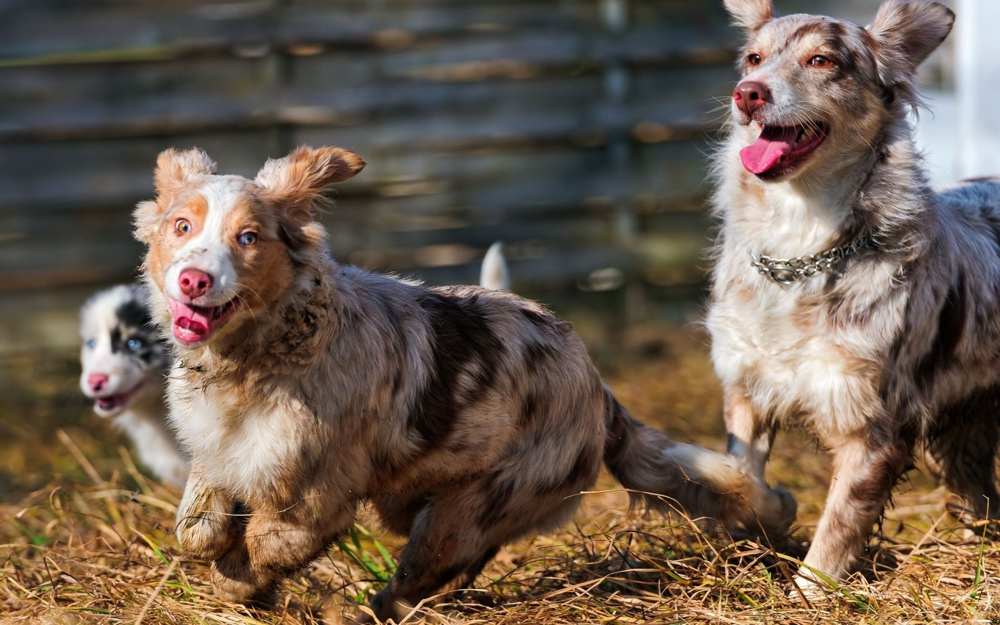

Herding Dogs
DogsHerding dogs are a specific category of dogs developed and trained to assist in the management of livestock such as sheep, goats, and cattle. These dogs are known for their intelligence, agility, and ability to make quick decisions, essential qualities for efficiently driving herds. Among the most popular herding dog breeds are the Border Collie, the German Shepherd, and the Australian Shepherd. The Border Collie, for example, is widely recognized for its exceptional ability to control herds with just its gaze. These dogs not only guide the animals but also protect the herd from potential predators, demonstrating an innate protective instinct.
My Dog
The socialization and training of herding dogs begin early, usually when they are still puppies, to ensure they develop the necessary skills and obey commands precisely. The relationship between the shepherd and his dog is one of extreme trust and coordination, with many commands being given through hand signals or specific sounds. In addition to their practical utility, herding dogs are often loyal and affectionate companions, forming strong bonds with their human families. The demand for these dogs remains high, especially in rural areas where livestock farming is an important economic activity. However, their role is not limited to rural areas; many herding dogs participate in agility and obedience competitions, highlighting their versatility and trainability.